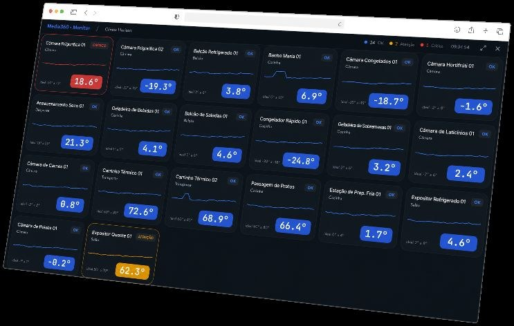
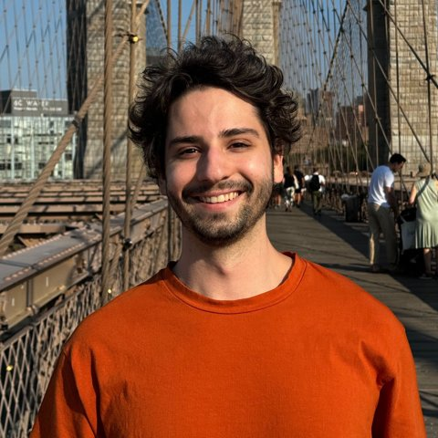
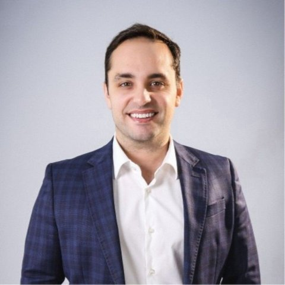

OPY Health, investida do BTG Pactual — do diagnóstico à plataforma em produção, em 12 semanas.
Temperatura de câmaras e equipamentos, volume de refeições entregues e desperdício — monitorados em tempo real, com alertas automáticos antes de virar um problema de segurança alimentar.

Código e dados são da OPY Health.
~R$1.500/mês de infraestrutura própria.
Mesmo painel, outros hospitais.
Agente integrado ao catálogo, com helpdesk unificado em WhatsApp, e-mail e site.
Cadastros, vendas, agendamentos e emissão de nota fiscal direto na conversa.
Leitura automática de NFs em múltiplos formatos, com validação em código.
Perguntas sobre vendas, custos e ticket médio, respondidas no WhatsApp.

Liderou a implementação de IA na Cloud Humans, à frente de 200+ automações para Shopee, Insider, Nuvemshop e Conta Simples. Fundou a Treve, marketplace de eventos adquirido pela Airbuzz, e atuou como consultor na EloGroup (iFood, Novo Nordisk).

Construiu carreira em estratégia e crescimento, ajudando a escalar uma empresa de tecnologia de R$20M a R$70M em receita. Hoje lidera vendas enterprise e é especialista em segurança de software.